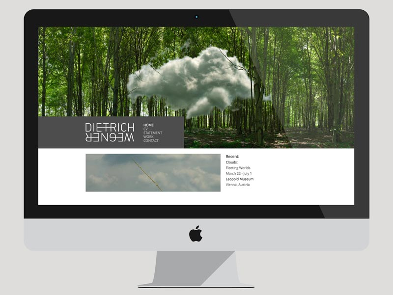
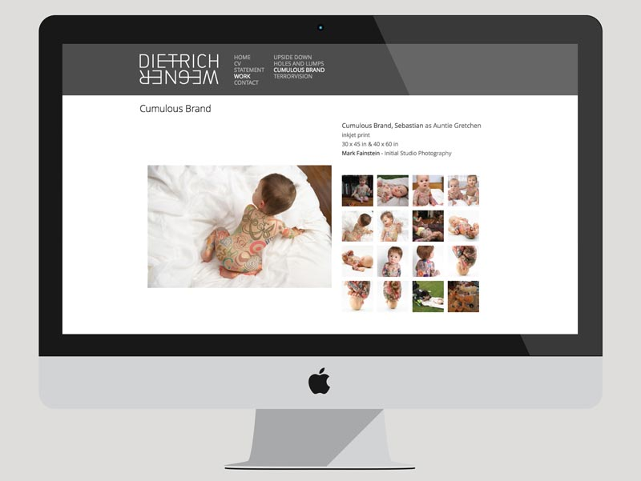
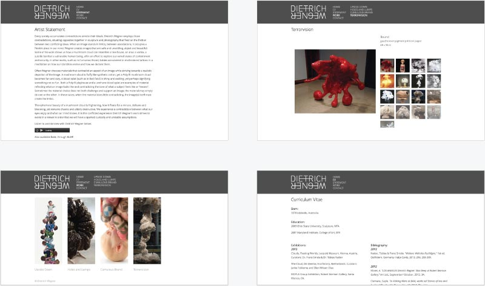

< Prev
Next >
Dietrich Wegner is a professor and local artist in the Edinboro, PA area. His main concerns with his previous portfolio website were the navigation of the his series and the consistent focus on his work. The goals for the design team were to redesign his site with these concerns in mind as well as developing a fully working site that he could easily maintain himself.
  Made with love and powered with ice cream.